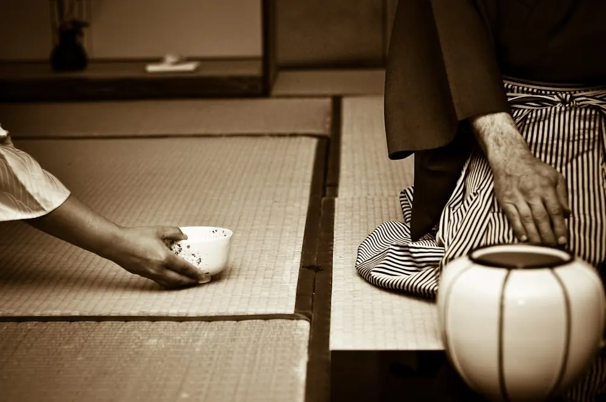

活元運動Meditazione
Katsugen Undo
Il Movimento rigeneratore, o «Movimento che permette il ritorno alla sorgente».
Nato e sviluppatosi in Giappone nel secolo scorso per opera del Maestro Haruchika Noguchi, il Katsugen undo è stato diffuso in Europa dal Maestro Itsuo Tsuda, il quale ha posto questa pratica al centro della sua filosofia di «Scoperta dello Spirito del Cuore di Cielo Puro» (Tenshin); questo spirito non è il prodotto di ricerche intellettuali, ma esiste all'origine in ogni uomo.
Per permettere la scoperta e l'approfondimento di questa pratica, nel nostro Dojo vengono organizzate regolarmente sedute di Katsugen undo.

Il Katsugen undo (movimento rigeneratore) si pratica mediante la sospensione momentanea del sistema volontario. Non necessita di alcuna conoscenza, né tecnica. Al contrario, bisogna liberarsene. La ricerca di una finalità preliminarmente determinata non fa che ostacolare l'evoluzione naturale del nostro essere. Il principio che noi abbiamo formulato è dunque: «Senza conoscenza, senza tecnica, senza scopo».
Per chi vede il movimento rigeneratore per la prima volta lo spettacolo è abbastanza sorprendente. Poiché si è abituati a movimenti più o meno controllati, intellettualizzati, perfino ricercati, un movimento che supera l'ambito volontario fa pensare alla malattia, alla follia o all'ipnosi; il movimento rigeneratore sembra prestarsi a simili interpretazioni. La verità è tutt'altra. Durante il movimento, il conscio, invece di essere angosciato come quello di un malato, resta calmo e sereno. Invece di essere confuso come quello di un folle, resta lucido. Invece di essere imprigionato e limitato come quello di un ipnotizzato, resta libero.
Non si esegue il movimento rigeneratore. È lui che scatta, rispondendo al bisogno dell'organismo. Dato che questo bisogno differisce da un individuo all'altro e, nello stesso individuo, da un momento all'altro, non può esservi nessun movimento uniformemente programmato. Per questa ragione, niente è tanto facile quanto deviare da ciò che è naturale, aggiungendo degli «ingredienti seducenti». Teoricamente, esistono due forme di movimento rigeneratore: una esiste di fatto in tutti gli individui, sotto forma di reazioni naturali dell'organismo, come lo sbadiglio, lo starnuto, l'agitazione durante il sonno; l'altra, la cui formula è stata messa a punto mezzo secolo fa dal Maestro Haruchika Noguchi. È quest'ultima forma che noi pratichiamo nel nostro Dojo.
Per iniziarsi al movimento è auspicabile attendere che si sia raggiunto un certo grado di maturità mentale e che tutte le soluzioni proposte siano rimesse in questione. Non bisogna imporlo a nessuno, nemmeno alla vostra famiglia, né in un momento qualsiasi. È essenziale che il desiderio per un ritorno alla naturalezza germini dentro di sé. Non si strappano i frutti prima che siano maturi. Il movimento non costituisce un apporto esterno. Esso traccia il cammino per la scoperta di sé in profondità. Questo cammino non è in linea retta verso il paradiso, è tortuoso. Sta ad ognuno, alla propria responsabilità, trovare la personale unità d'essere.
Man mano che il corpo si sensibilizza, può prodursi il risveglio di sensazioni perturbanti, il che scoraggia le persone che non hanno una buona comprensione di partenza. Il movimento, dopo aver raggiunto intensità molto marcate, si calma gradualmente. Diventa più sottile. La respirazione si approfondisce. Il movimento finisce per coincidere con il movimento nella vita quotidiana, divenuto quest'ultimo talmente naturale che non ci sarà più bisogno di fare qualcosa di speciale. Il terreno sarà allora normalizzato. Questa normalizzazione non è semplicemente fisica, ma anche psichica. Una nuova prospettiva si crea man mano che si sviluppa l'attitudine alla fusione di sensibilità che permea i nostri rapporti umani e le nostre reazioni all'ambiente circostante. Se questa fusione amplia l'apertura del nostro spirito si raggiungerà la condizione del non-corpo e del non-mentale. È allora che si scoprirà che l'uomo è fondamentalmente libero.
Via di unificazione
Yoga
Presso il nostro Centro si tramanda la tradizione millenaria dello Yoga, valorizzandone il significato più umano e spirituale di «Via di unificazione».
Lo Yoga è un'antica disciplina indiana conosciuta in Occidente soprattutto nella forma dell'Hatha Yoga, che vuol dire «unire il sole e la luna», ossia legare gli opposti per ricercare l'equilibrio interiore.
Attraverso posizioni fisiche, tecniche di respiro e meditazione la pratica diventa un mezzo per cambiare se stessi, imparando a vivere con tutto il proprio essere in uno stato di pienezza ed unità.
Al Kami No Kan Dojo potrai scegliere il percorso di pratica più adatto a te, tra lezioni settimanali e seminari di approfondimento mensili.

Mente e corpo
Pilates
Un metodo di allenamento che coinvolge mente e corpo donando vitalità e conferendo grazia, agilità e forza.
Un programma di esercizi estremamente efficaci da compiere con lentezza e precisione, abbinandoli ad una respirazione profonda e consapevole. Basato su movimenti fluidi e morbidi, il Pilates rappresenta un metodo ottimale per irrobustire ed allungare i muscoli e per potenziare il baricentro del corpo.
Durante l'allenamento ci si concentra sull'equilibrio del corpo e sulla corretta esecuzione dei movimenti: la mente non avrà il tempo di soffermarsi su preoccupazioni e problemi di ogni giorno. Al termine dell'allenamento si avvertirà una sintonia diffusa, un senso di forza ed una maggiore consapevolezza di sé.

Contatti
Trova il tuo percorso
Lezioni settimanali e seminari di approfondimento mensili.